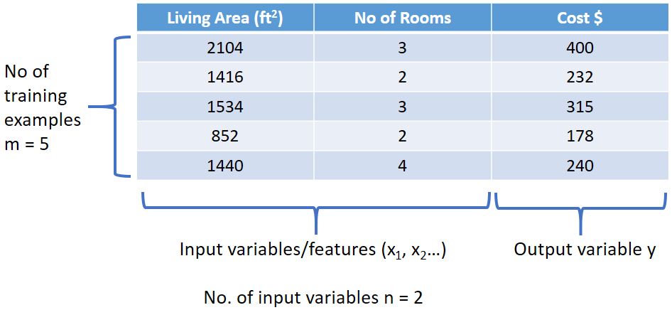
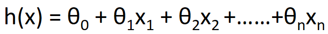
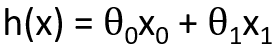
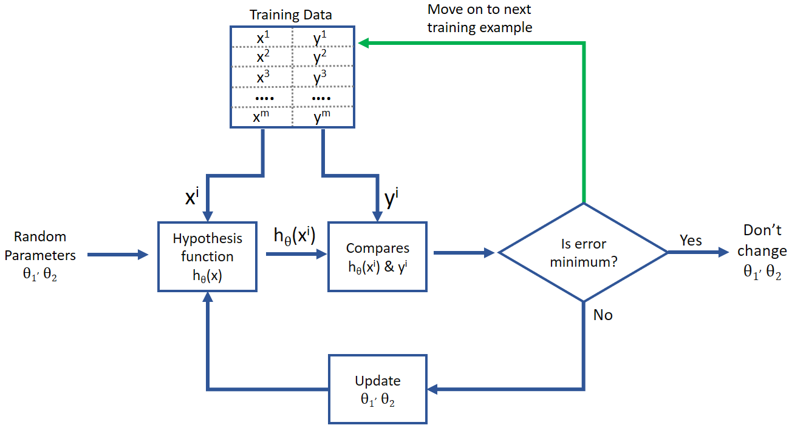
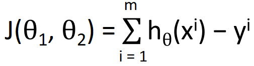

HOME BLOG EBOOKS ABOUT CONTACT SHOP
So far we have learnt that Regression methods are used in problems where we want to predict a real numerical value using the training data. The first algorithm we are looking into is called the linear regression. For this, the example we are going to be using is that of Housing prices.
Here is the training data for our example. Our goal is to predict or estimate the cost of a house for inputs not in the training data (say 1800 ft² living area & 2 rooms).

First let’s look at some notations:
As mentioned many times previously (sorry about that), the goal of supervised learning is to find a mathematical relation/ function between input and output from training data and use it to find output for other inputs. That mathematical function/relation is called the hypothesis function, denoted by h(x).
In case of the Linear regression algorithm, the hypothesis function is of the form:

Where θ0, θ1, θ3,….θn are real no.’s, they are called parameters or weightages. There will be n+1 such parameters for an n input feature data set, but for convenience we are going to add an extra input feature x0 = 1.
And for the ease of understanding, we are going to consider just one input feature (Living area) from here on. Therefore the corresponding hypothesis function is given by:

So how do we obtain the hypothesis using from the training data? The idea is to start with some random values of parameters and generate a hypothesis function, then the training data is input one example at a time and the output the hypothesis function produces is compared with the real output from the data. In the process, the values of the parameters are modified so as to obtain the most suited hypothesis function.

Now the question is, how do we compare the output from the hypothesis function and the real output? For that, we need to use the cost function. Cost function J is defined as:
For those of you not used to this kind of formula in math, this may seem a little complex. And at least some of you might be thinking why can’t the cost function be something simpler, maybe like:

It’s a very valid question and something many may not know. If the cost function was as shown above, then as we try to minimize it, we would be making the whole term more and more negative, which makes no sense. Squaring ensures that the difference is always positive, and therefore by minimizing, we are aiming for a positive value closer to zero, if not zero exactly.
The whole function is divided by m so that we get the average error instead of total error. Also we divide by 2, in order to make calculations easier as we take the derivative later on.
We don’t want to cram with too much math and notation all at once, so we have broken this discussion into several sections. How the algorithm goes about minimizing the cost function and so on is discussed in the next section. You might want to re read this section before going into the next one.